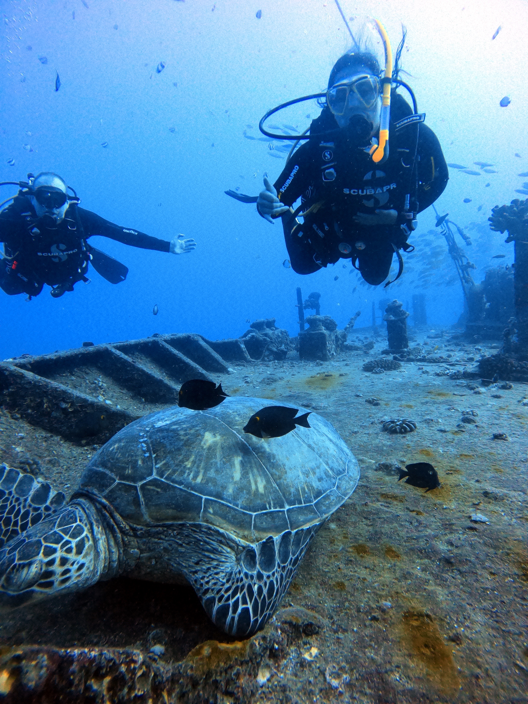
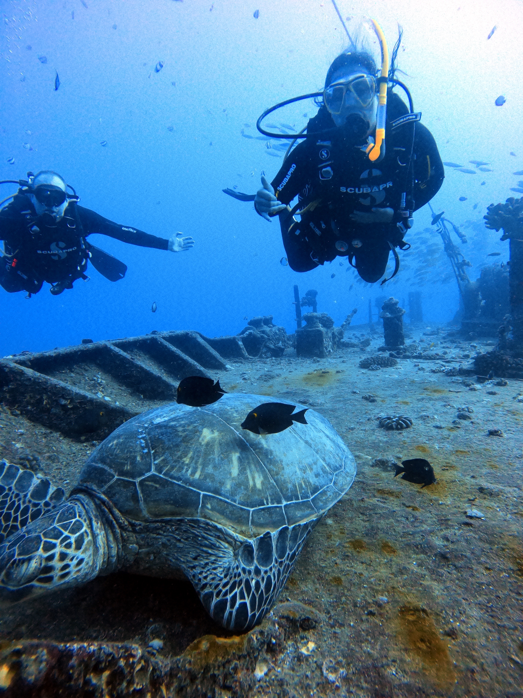

About
More about me!
I recently earned a Master of Environmental Data Science degree from the Bren School of Environmental Science & Management at the University of California, Santa Barbara. I built two interactive web applications for a client with a team of three other graduate students. These applications were developed in response to our client’s needs of improving their data management system and creating a way to visualize the data they collected. Their work directly impacts Marine Protected Areas by identifiying gaps in enforcement of these regions, collecting data on categories related to enforcement, and working with partners to improve the protection of these habitats. Our applications allowed them to reduce errors in data compilation, save time by giving them an automated data entry system, and a tool to visualize trends in their data. In addition to this capstone project, I learned about geospatial analysis, data management, and open data science through coursework and connections at the Bren School and the National Center for Ecological Analysis and Synthesis.
I graduated from the University of California, Santa Cruz in 2022 with a Bachelor’s degree in Environmental Sciences, where I focused on climate change and oceanography. While there, I was a Santa Cruz Climate Action Program Intern who collected data on potential community responses to coastal erosion. Surveying and collecting data as an intern, doing field work through courses at UCSC, and working with climate models in my undergraduate capstone project inspired my curiosity for data as a tool of scientific communication. Interest in undergraduate environmental data analysis and climate modeling drove me to seek out the Bren School for Environmental Science & Management to deepen my understanding of data driven solutions to environmental problems. I hopes to use my degree to contribute to sustainable technology and to pursue a career in data science.
Spending time by the ocean
Hiking and camping with my pups
Music (going to concerts or playing it!)
Scuba diving
Exploring new restaurants
 

I love to travel, and have been fortunate to have had the opportunity to. I look forward to travelling more in my life since my travels so far have given me the chance to learn more about different perspectives and cultures. Here where I’ve been so far!